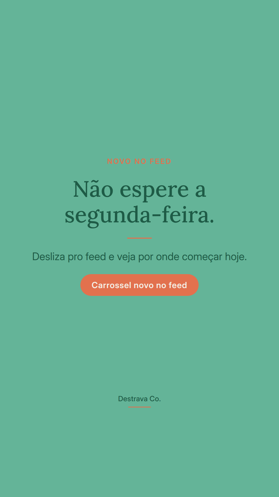
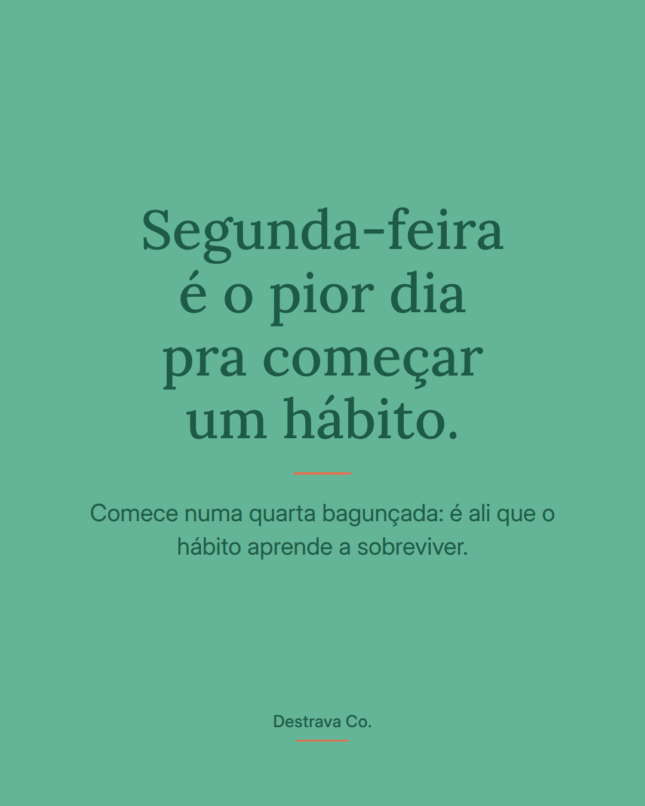
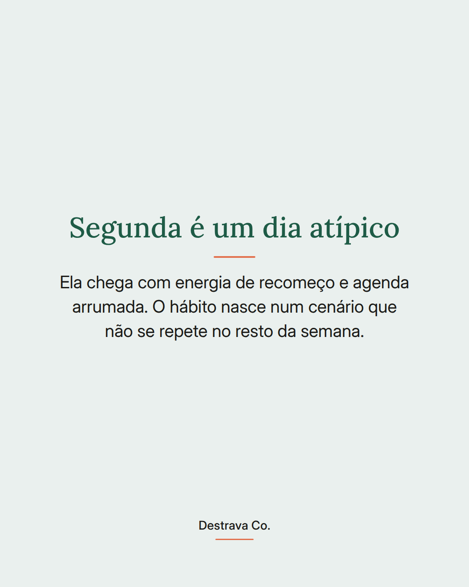
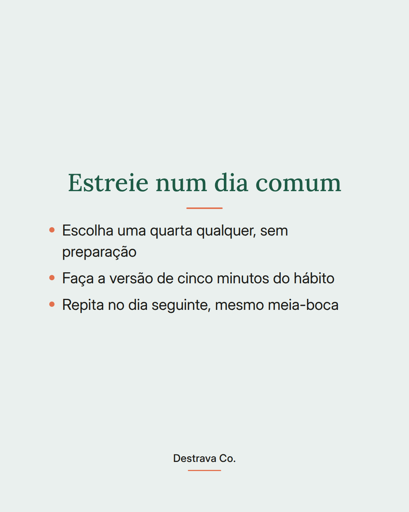
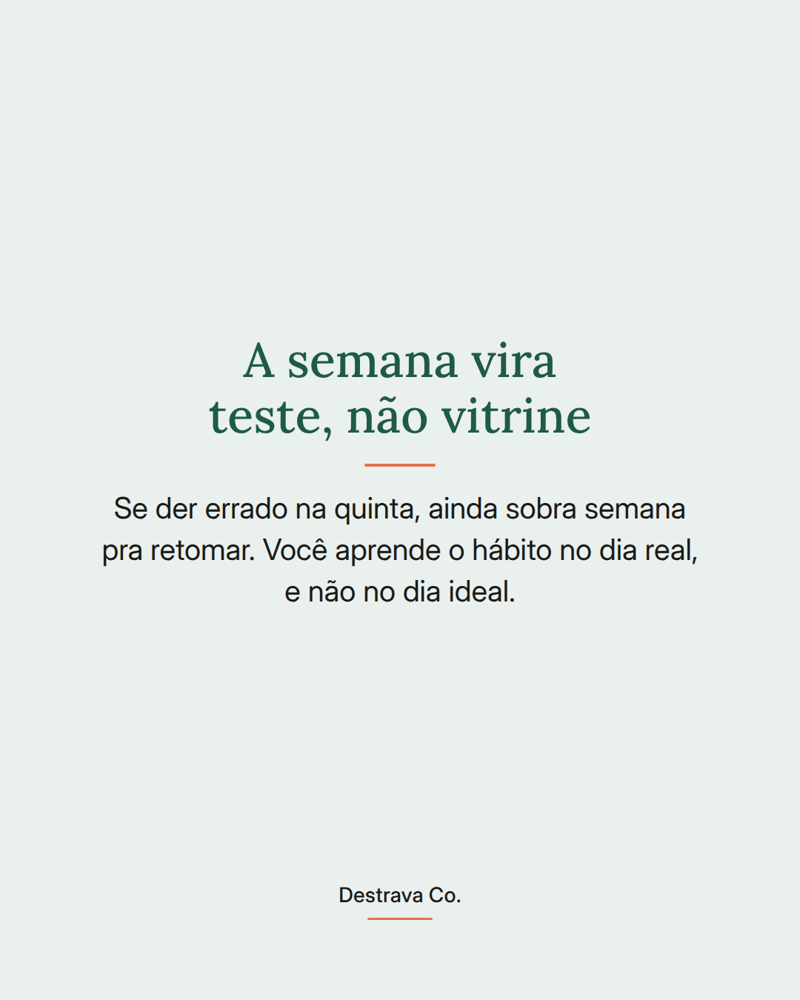

Começar um hábito na segunda-feira parece organizado, mas costuma ser armadilha.
Segunda vem com energia de recomeço, agenda limpa na cabeça e intenção alta. Só que esse cenário não se repete na quarta à noite, quando a casa está bagunçada e você está cansada. O hábito que você treinou no dia fácil não aprendeu a existir no dia difícil.
Por isso, estreia melhor num dia comum. Escolhe uma quarta qualquer, faz a versão de cinco minutos e repete no dia seguinte mesmo que saia meia-boca. Se falhar na quinta, ainda sobra semana pra retomar, e retomar dentro da mesma semana é o que sustenta a constância.
E o melhor: você não precisa esperar nada. Nem segunda, nem dia primeiro, nem a fase calma que nunca chega.
Salva pra lembrar no próximo recomeço e manda pra uma amiga que vive adiando pra segunda. Se quiser um caminho pronto pra criar constância em passos pequenos, dá uma olhada no Destrava 21 e no método D.R.A.